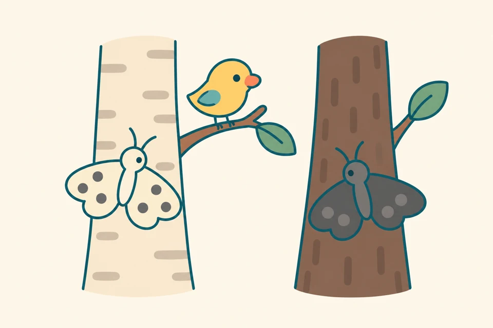
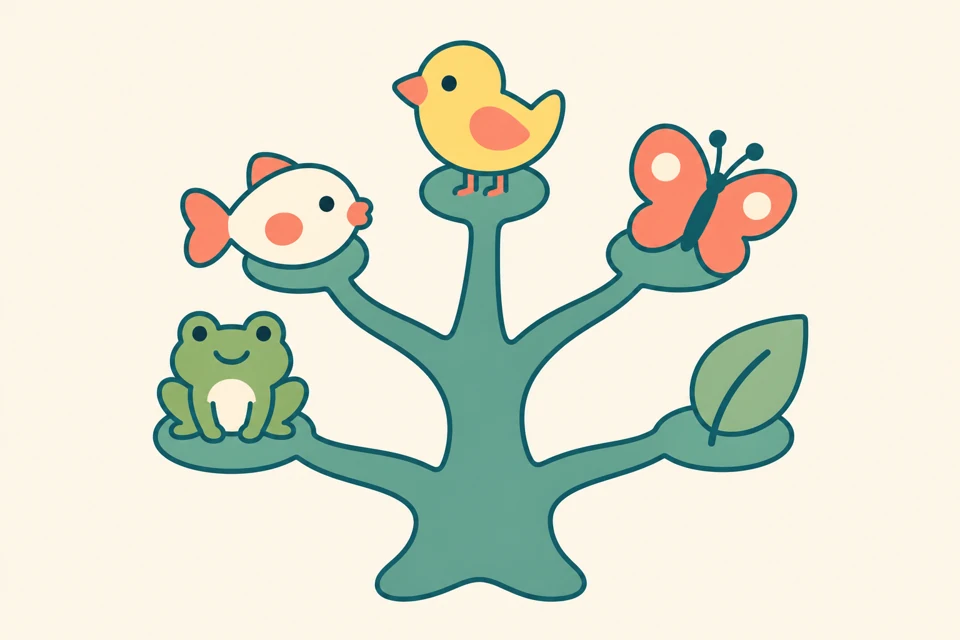
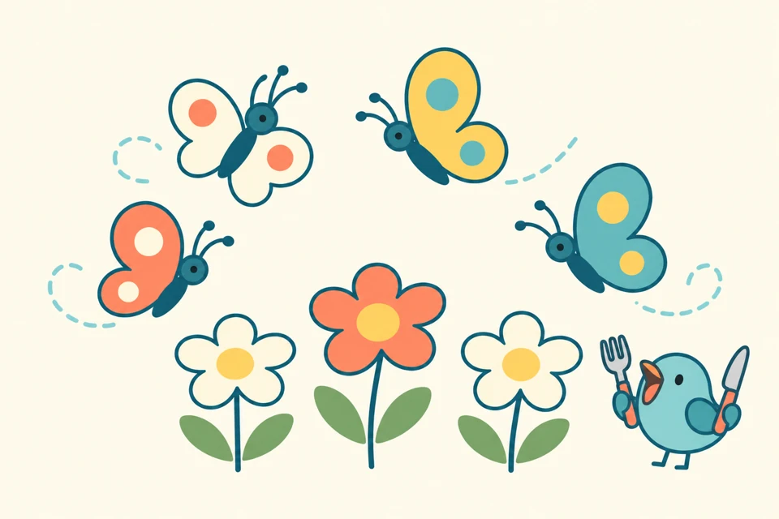
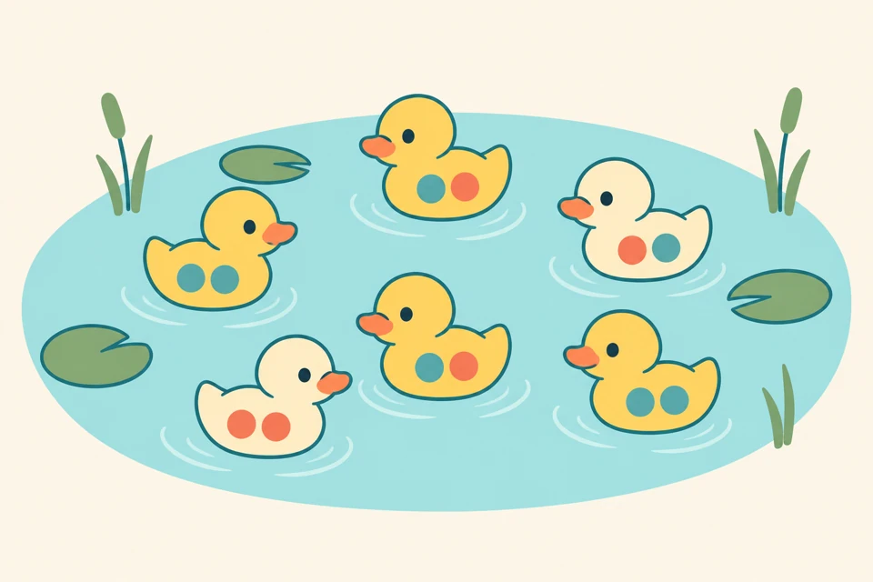
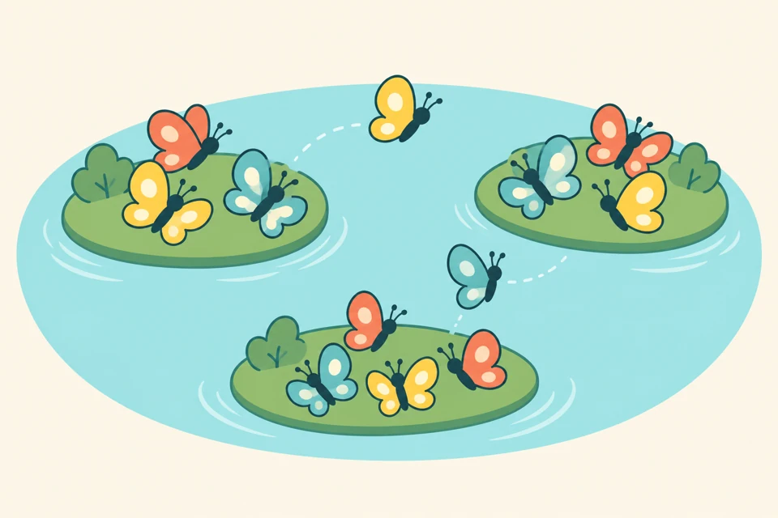
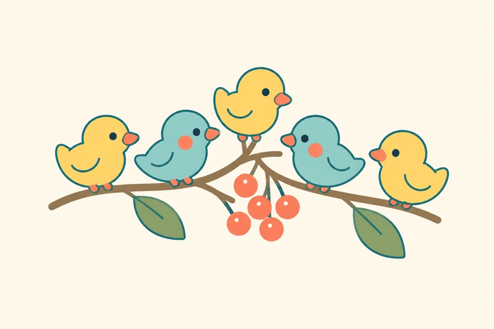
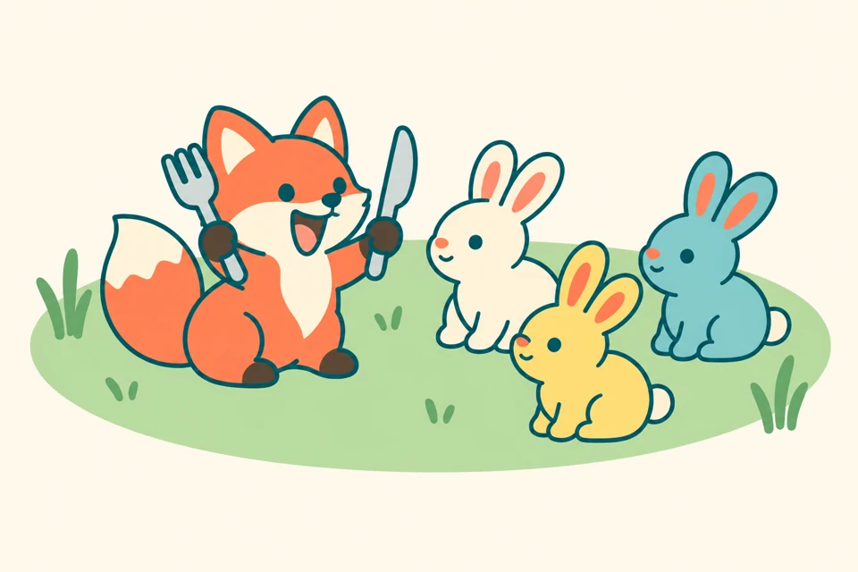
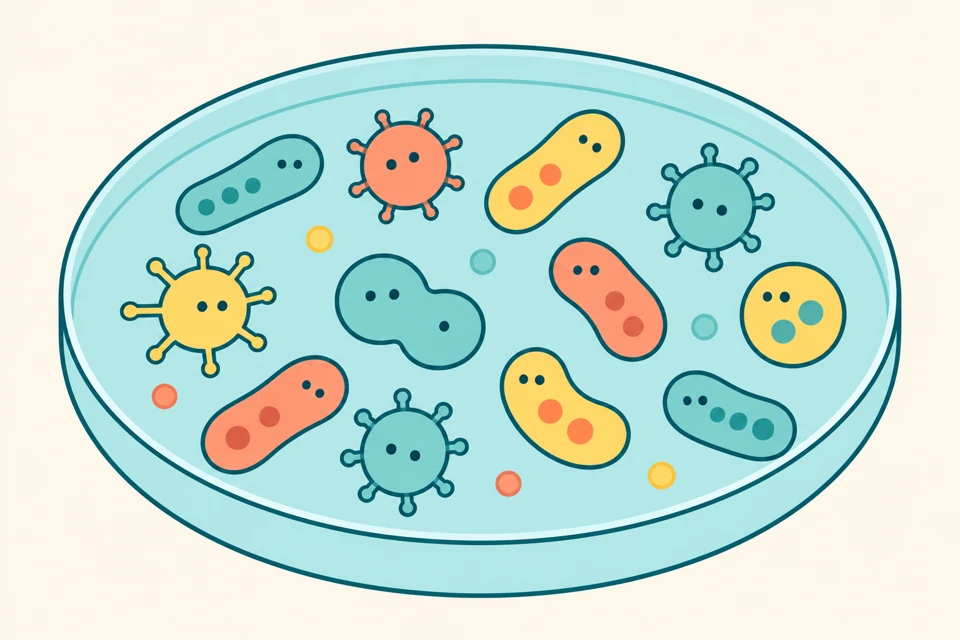
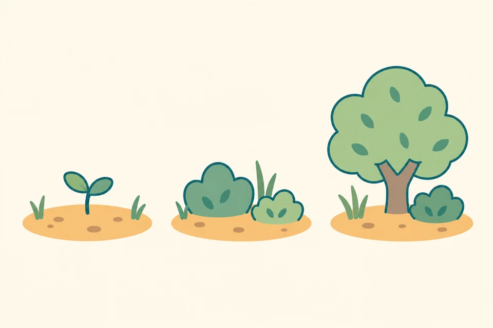
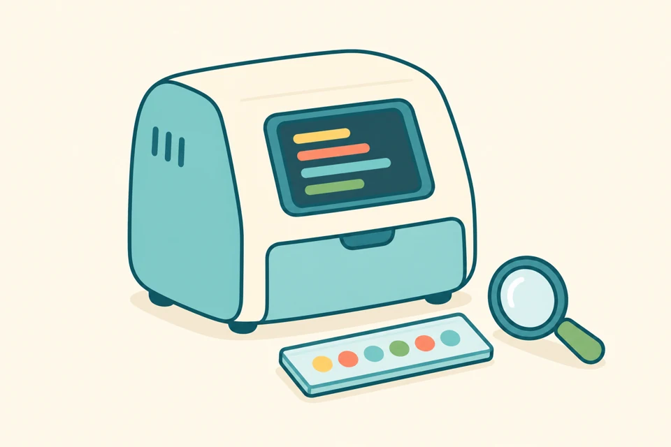

Explorer les animations
D’une mare de canards à l’intérieur d’un séquenceur, explorez les mécanismes qui façonnent la complexité du vivant.

La forêt des phalènes du bouleau
Découvrez comment le camouflage et les oiseaux prédateurs modifient les proportions de papillons clairs et sombres.
Bientôt disponible
Le piège à recombinaison
Comparez différentes organisations des chromosomes et découvrez comment les inversions peuvent préserver des associations d’allèles.
Bientôt disponible
L’arbre du vivant se déploie
Suivez des lignées qui se séparent, évoluent et parfois disparaissent.
Bientôt disponible
Le jeu du mimétisme
Découvrez les interactions entre signaux d’avertissement, imitateurs comestibles et apprentissage des prédateurs.
Bientôt disponible
La mare aux canards
Suivez des canards au fil des générations et observez comment le hasard modifie les proportions de leurs allèles.
Explorer l’animation
Les îles aux papillons
Suivez des papillons d’une île à l’autre et explorez les effets des migrations sur leur composition génétique.
Bientôt disponible
Colonisation d’une île
Découvrez comment une petite population fondatrice peut n’emporter qu’une partie de la diversité génétique d’origine.
Bientôt disponibleLe jardin des papillons
Explorez l’équilibre entre les mutations qui introduisent une variante de couleur et la sélection qui l’élimine.
Bientôt disponible
Le mélangeur de chromosomes
Mélangez des chromosomes parentaux et découvrez comment les échanges de fragments recomposent les associations d’allèles.
Bientôt disponible
Sur les traces des ancêtres
Remontez le temps avec des lignées génétiques qui se rejoignent chez des ancêtres communs.
Bientôt disponible
Renards et lapins
Suivez les variations d’effectif des lapins et des renards au fil de leurs cycles liés.
Bientôt disponibleLa bataille des ressources
Explorez les conditions qui permettent à deux espèces partageant une ressource limitée de coexister.
Bientôt disponible
La boîte de Petri
Comparez une croissance rapide au ralentissement provoqué par des ressources limitées.
Explorer l’animationUne communauté insulaire se construit
Découvrez comment la superficie et l’isolement d’une île influencent le nombre d’espèces qui y vivent.
Bientôt disponible
Du sol nu à la forêt
Suivez le rétablissement d’un paysage après une perturbation et l’évolution de ses communautés végétales.
Bientôt disponible
À la recherche du SNP
Découvrez comment la profondeur de séquençage, les erreurs et les proportions d’allèles influencent la fiabilité d’un génotype.
Bientôt disponible
La machine à remonter le temps moléculaire
Découvrez ce que l’ADN fragmenté et endommagé peut nous apprendre du passé.
Bientôt disponible
Zoom sur le séquençage
Passez du séquenceur aux structures microscopiques de sa cellule de séquençage.
Bientôt disponible
D’où vient cette lecture ?
Trouvez l’origine de courtes lectures d’ADN et découvrez pourquoi certains alignements sont ambigus.
Bientôt disponible
Le puzzle de l’ADN
Assemblez des lectures de séquençage et explorez les difficultés créées par l’ADN répété.
Bientôt disponible